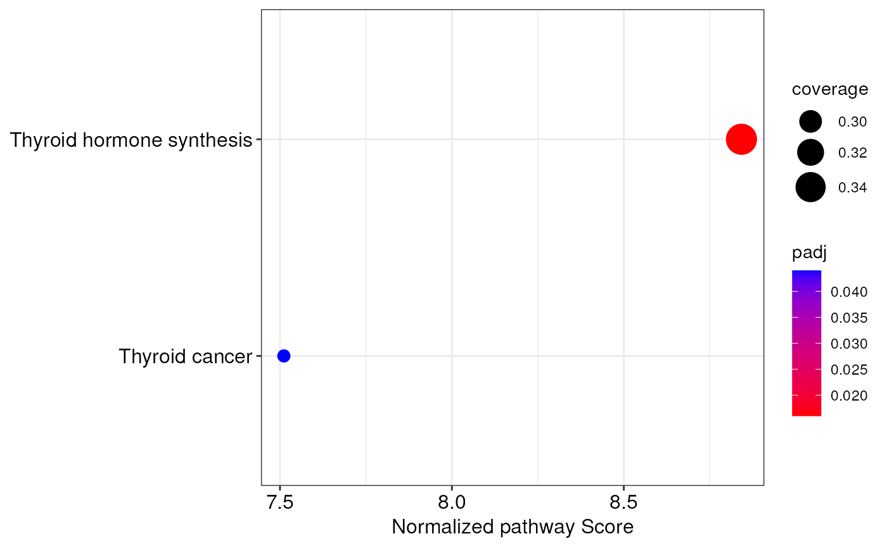
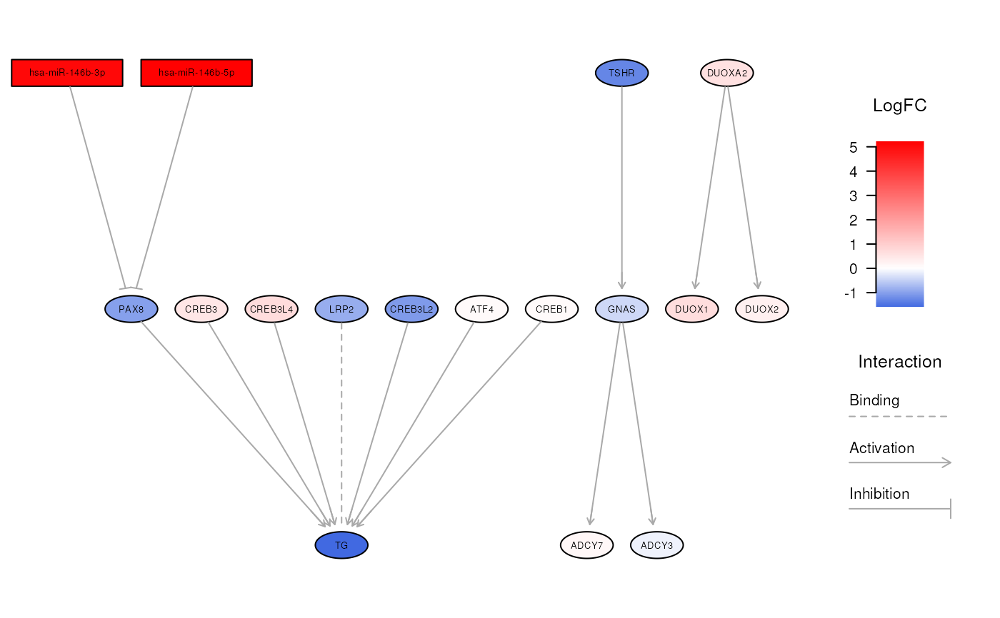

Perform a topologically-aware integrative pathway analysis (TAIPA)
Source:R/topological-integration.R
topologicalAnalysis.RdThis function allows to perform an integrative pathway analysis that aims
to identify the biological networks that are most affected by miRNomic
and transcriptomic dysregulations. This function takes miRNA-augmented
pathways, created by the preparePathways() function, and then calculates
a score that estimates the degree of impairment for each pathway. Later,
statistical significance is calculated through a permutation test. The main
advantages of this method are that it doesn't require matched samples, and
that it allows to perform an integrative miRNA-mRNA pathway analysis that
takes into account the topology of biological networks. See the details
section for additional information.
Usage
topologicalAnalysis(
mirnaObj,
pathways,
pCutoff = 0.05,
pAdjustment = "max-T",
nPerm = 10000,
progress = FALSE,
tasks = 0,
BPPARAM = bpparam()
)Arguments
- mirnaObj
A
MirnaExperimentobject containing miRNA and gene data- pathways
A
listof miRNA-augmented pathways returned by thepreparePathways()function- pCutoff
The adjusted p-value cutoff to use for statistical significance. The default value is
0.05- pAdjustment
The p-value correction method for multiple testing. It must be one of:
max-T(default),fdr,BH,none,holm,hochberg,hommel,bonferroni,BY- nPerm
The number of permutation used for assessing the statistical significance of each pathway. Default is 10000. See the details section for additional information
- progress
Logical, whether to show a progress bar during p-value calculation or not. Default is FALSE, not to include a progress bar. Please note that setting
progress = TRUEwith high values oftasksleads to less efficient parallelization. See the details section for additional information- tasks
An integer between 0 and 100 that specifies how frequently the progress bar must be updated. Default is 0 to simply split the computation among the workers. High values of
taskscan lead to 15-30% slower p-value calculation. See the details section for additional information- BPPARAM
The desired parallel computing behavior. This parameter defaults to
BiocParallel::bpparam(), but this can be edited. SeeBiocParallel::bpparam()for information on parallel computing in R
Value
An object of class
IntegrativePathwayAnalysis that stores
the results of the analysis. See the relative help page for further details.
Details
Topologically-Aware Integrative Pathway Analysis (TAIPA)
This analysis aims to identify the biological pathways that result affected by miRNA and mRNA dysregulations. In this analysis, biological pathways are retrieved from a pathway database such as KEGG, and the interplay between miRNAs and genes is then added to the networks. Each network is defined as a graph \(G(V, E)\), where \(V\) represents nodes, and \(E\) represents the relationships between nodes.
Then, nodes that are not significantly differentially expressed are assigned a weight \(w_i = 1\), whereas differentially expressed nodes are assigned a weight \(w_i = \left| \Delta E_i \right|\), where \(\Delta E_i\) is the linear fold change of the node. Moreover, to consider the biological interaction between two nodes, namely \(i\) and \(j\), we define an interaction parameter \(\beta_{i \rightarrow j} = 1\) for activation interactions and \(\beta_{i \rightarrow j} = -1\) for repression interactions. Subsequently, the concordance coefficient \(\gamma_{i \rightarrow j}\) is defined as:
$$\gamma_{i \rightarrow j} = \begin{cases} \beta_{i \rightarrow j} &\text{if } sign(\Delta E_i) = sign(\Delta E_j) \\ - \beta_{i \rightarrow j} &\text{if } sign(\Delta E_i) \not= sign(\Delta E_j) \end{cases}\,.$$
Later in the process, a breadth-first search (BFS) algorithm is applied to topologically sort pathway nodes so that each individual node occurs after all its upstream nodes. Nodes within cycles are considered leaf nodes. At this point, a node score \(\phi\) is calculated for each pathway node \(i\) as:
$$\phi_i = w_i + \sum_{j=1}^{U} \gamma_{i \rightarrow j} \cdot k_j\,.$$
where \(U\) represents the number of upstream nodes, \(\gamma_{i \rightarrow j}\) denotes the concordance coefficient, and \(k_j\) is a propagation factor defined as:
$$k_j = \begin{cases} w_j &\text{if } \phi_j = 0 \\ \phi_j &\text{if } \phi_j \not = 0 \end{cases}\,.$$
Finally, the pathway score \(\Psi\) is calculated as:
$$\Psi = \frac{1 - M}{N} \cdot \sum_{i=1}^{N} \phi_i\,,$$
where \(M\) represents the proportion of miRNAs in the pathway, and \(N\) represents the total number of nodes in the network.
Then, to compute the statistical significance of each pathway score, a permutation procedure is applied. Later, both observed pathway scores and permuted scores are standardized by subtracting the mean score of the permuted sets \(\mu_{\Psi_P}\) and then dividing by the standard deviation of the permuted scores \(\sigma_{\Psi_P}\).
Finally, the p-value is defined based on the fraction of permutations that reported a higher normalized pathway score than the observed one. However, to prevent p-values equal to zero, we define p-values as:
$$p = \frac{\sum_{n=1}^{N_p} \left[ \Psi_{P_N} \ge \Psi_N \right] + 1} {N_p + 1}\,.$$
In the end, p-values are corrected for multiple testing either through the max-T procedure (default option) which is particularly suited for permutation tests, or through the standard multiple testing approaches.
Implementation details
For computational efficiency, pathway score computation has been implemented
in C++ language. Moreover, to define the statistical significance of each
network, a permutation test is applied following the number of permutations
specified with nPerm. The default setting is to perform 10000 permutations.
The higher is the number of permutations, the more stable are the calculated
p-values, even though the time needed will increase. In this regard, since
computing pathway score for 10000 networks for each pathway is
computationally intensive, parallel computing has been employed to reduce
running time. The user can modify the parallel computing behavior by
specifying the BPPARAM parameter. See BiocParallel::bpparam() for
further details. Further, a progress bar can also be included to show the
completion percentage by setting progress = TRUE. Moreover, the user can
define how frequently the progress bar gets updated by tweaking the tasks
parameter. When using progress = TRUE, setting tasks to 100 tells the
function to update the progress bar 100 times, so that the user can see
increases of 1%. Instead, setting tasks to 50, means that the progress bar
gets updated every 2% of completion. However, keep in mind that tasks
values from 50 to 100 lead to 15-30% slower p-value calculation due to
increased data transfer to the workers. Instead, lower tasks values like
20 determine less frequent progress updates but are only slightly less
efficient than not including a progress bar.
References
Peter H. Westfall and S. Stanley Young. Resampling-Based Multiple Testing: Examples and Methods for p-Value Adjustment. John Wiley & Sons. ISBN 978-0-471-55761-6.
Author
Jacopo Ronchi, jacopo.ronchi@unimib.it
Examples
# load example MirnaExperiment object
obj <- loadExamples()
# perform integration analysis with default settings
obj <- mirnaIntegration(obj)
#> Since data derive from paired samples, a correlation test will be used.
#> Performing Spearman's correlation analysis...
#> A statistically significant correlation between 215 miRNA-target pairs was found!
# \donttest{
# retrieve pathways from KEGG and augment them with miRNA-gene interactions
paths <- preparePathways(obj)
#> Reading KEGG pathways from cache...
#> Adding miRNA-gene interactions to biological pathways...
#> Warning: 152 pathways have been ignored because they contain too few nodes with gene expression measurement.
#> Performing topological sorting of pathway nodes...
# perform the integrative pathway analysis with 1000 permutations
ipa <- topologicalAnalysis(obj, paths, nPerm = 1000)
#> Calculating pathway scores...
#> Generating random permutations...
#> Calculating p-values with 1000 permutations...
#> Correcting p-values through the max-T procedure...
#> The topologically-aware integrative pathway analysis reported 2 significantly altered pathways!
# access the results of pathway analysis
integratedPathways(ipa)
#> pathway coverage score
#> Thyroid hormone synthesis Thyroid hormone synthesis 0.3469388 12.12941
#> Thyroid cancer Thyroid cancer 0.2820513 11.56291
#> normalized.score P.Val adj.P.Val
#> Thyroid hormone synthesis 8.436331 0.000999001 0.014
#> Thyroid cancer 7.099923 0.000999001 0.040
# create a dotplot of integrated pathways
integrationDotplot(ipa)

# explore a specific biological network
visualizeNetwork(ipa, "Thyroid hormone synthesis")

# }